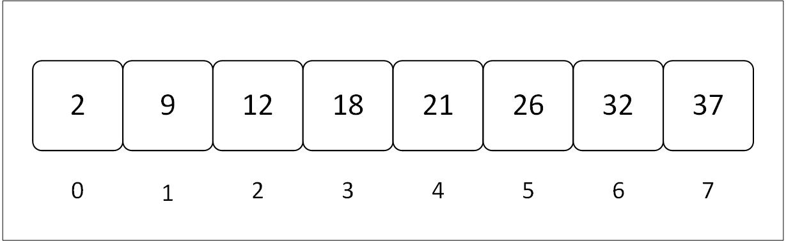
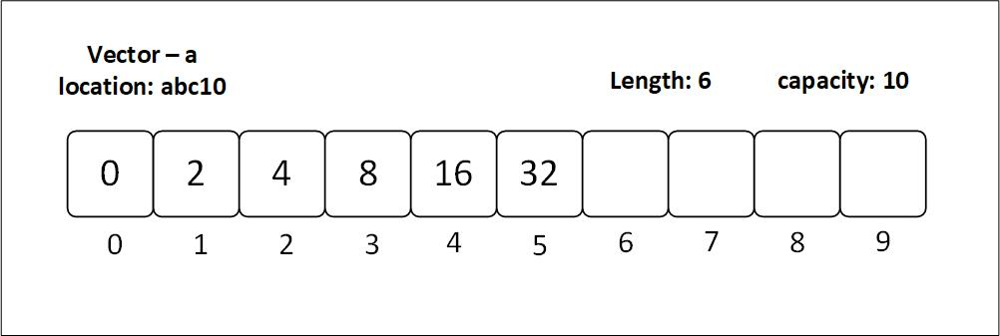
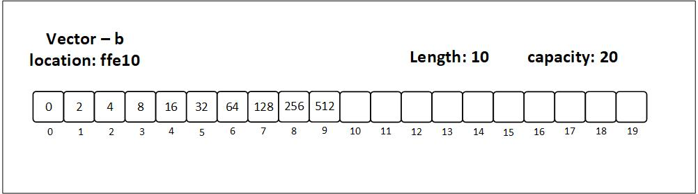
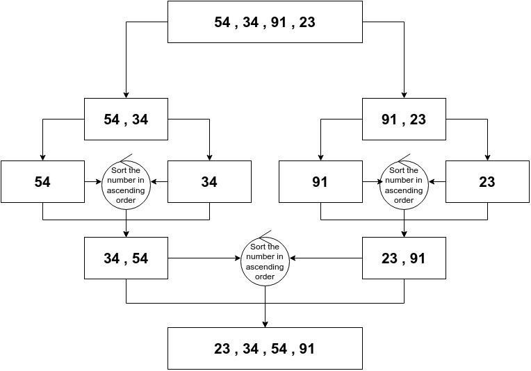

What is Data Structures and Algorithms
Data Structures and Algorithms are closely connected, like space and time. A data structure is like space where many things exist and can move freely. This space has planets, stars, galaxies, and more. Some things move in a predictable way, while others don't. But without time, these things don't matter. Nothing happens, and nothing changes.
It's the same with data structures and algorithms. Without algorithms, data is useless, and without data structures, algorithms can't work. We use algorithms to create, access, update, and delete data structures.
In short, data structures and algorithms are like two sides of the same coin. One can't exist without the other.
The ability to write an efficient algorithm depends on the organization of data in an appropriate manner. This means algorithms can only be as good as the data structure they are designed for. In this book, we will learn how to design and implement data structures and algorithms.
Data Structure
A data structure organizes data for specific operations. It is like a blueprint that shows how data is connected and organized.
To understand this better, we'll create a data structure of our own.
Imagine we are part of a vibrant book club that shares and discusses our favorite reads. We want to store the titles of the books we've read in our computer. Talia, one of our enthusiastic members, suggests we create a data structure to help us manage this collection. Here are some key requirements: Since our club has a steady membership and we don't frequently add or remove books, we can store our data in a contiguous block of memory. We need quick and efficient access to our book titles, so each entry will be assigned a unique index number. This way, we can easily retrieve any book title using its index. To keep things simple, we will only store the titles of the books in our data structure, meaning only strings are allowed.
The data structure that meets all these requirements is called an array. We'll dive deeper into arrays in the upcoming sections!
In a computer, 'data' is ultimately represented as a sequence of zeros and ones (bits), but this representation is too low level for the human beings operating that computer to discern. Hence, we have data structures that are closer to the way humans can understand and visualize the structure of this data. This is because it is humans who have to develop and maintain the software systems - computers merely run them.
Operations on Data Structures
Data structures need to have certain operations that help us to modify or access the content. These operations include:
- Traversal: This involves accessing each element of an array in a sequential order, either from start to end or vice versa.
- Insertion: This is the process of adding a new element to an array. The new element can be inserted at the beginning, end, or any other position within the array, depending on the application. Existing elements may shift to accommodate the new element.
- Deletion: This operation involves removing an existing element from an array. Similar to insertion, an element can be deleted from any position within the array, and existing elements may shift to fill the gap.
- Search: This process involves finding a specific element within an array by comparing the target element with each element in the array until a match is found.
- Sorting: This operation involves arranging elements in a specific order.
Algorithms
Computer Science is built on two pillars, one of which is algorithms. An algorithm is a set of steps or instructions that leads to solving a problem. This problem could involve a need for improvement in previous technologies or a completely new challenge. Algorithms are a fundamental part of computer science, used to accomplish a variety of computational tasks, such as performing calculations or finding specific information in databases.
How to make tea
Step 1: Boil a cup of water.
Step 2: Add one teaspoon of tea powder (with sugar if desired).
Step 3: If you enjoy milk in your tea, add it after 3 minutes of steeping.
Step 4: Heat tea to boiling point.
Step 5: Pour into cup.
We may not realize it, but we also use algorithms in our daily lives. Our rituals after waking up, the specific way we choose to make our coffee, the way we fold our laundry, all these tasks are completed as a result of us following an algorithm which we have chosen to execute.
Characteristics of an algorithm
- Well-defined instructions
- Finite number of steps
- Zero or more input(s)
- One or more output(s)
- Consistent
They can be expressed as natural languages, programming languages, pseudocode, flowcharts, and control tables.
After we have chosen the representation of data as required, this data has to be processed somehow. This is what leads to the need for algorithms. The process of interest could be searching, sorting, encryption, etc. We will cover storing, searching, and sorting algorithms in detail, as they underlie much of computer science.
Types of Algorithms
1. Search algorithm: This algorithm takes a token to be searched as input and outputs the address of that token in the data structure/database.
2. Sorting algorithm: This algorithm is used to rearrange data structures based on a comparison operator, which decides the new order of data.
3. Greedy algorithm: This algorithm solves optimization problems by finding the locally optimal solution, assuming it's the optimal solution at the global level.
4. Hashing algorithm: This algorithm takes data and converts it into a uniform message with a hashing value.
5. Backtracking algorithm: This algorithm finds a solution to a given problem in incremental approaches and solves it one section at a time.
6. Divide and conquer algorithm: This algorithm divides a problem into many sub-problems. Each sub-problem can be solved independently to produce a sub-solution. These sub-solutions are then combined to make a solution.
7. Encryption algorithm: This algorithm takes data and maybe an encryption key as input and outputs encrypted data. Concurrently, a decryption algorithm takes the encrypted data and decryption key as input and outputs the original text.
8. Recursive algorithm: This algorithm calls itself repeatedly until a solution emerges. Recursive algorithms call themselves with smaller values every time a recursive function is involved.
Key Considerations for Algorithm Design
When writing algorithms to solve a problem in programming, or finding a solution to a problem in general, we need to think about the following:
- What is the algorithm supposed to do?
- Does the algorithm do what it is supposed to do?
- Is the algorithm efficient? And can it be made more efficient?
Flowcharts
If you prefer your algorithms to be visual, you can also use flowcharts. Here's a resource to get you started. While you don't need to know how to build flowcharts, it is a nice tool that will help you see your problem in a different perspective.
You don't necessarily have to stick to the rules of drawing flowcharts if you understand what your are doing. But you can't go your own way when you are working with a group of people to solve a problem. Then a standardization of drawing components is necessary.
Complexity
Complexity is the unit of measurement of an algorithm to examine the time and space (memory) it requires to execute successfully. Complexity also measures how much more time and space are required as the input of said algorithms grows in size. An algorithm is said to be efficient and fast if it takes less time to execute and consumes less memory space.
Generally, complexity is used to compare two or more algorithms to evaluate which one will be more suitable for the task at hand.
Types of Complexity
There are six types of complexity:
- Constant Complexity
[O(1)] - Logarithmic Complexity
[O(log n)] - Linear Complexity
[O(n)] - Quadratic Complexity
[O(n^2)] - Factorial Complexity
[O(n!)] - Exponential Complexity
[O(2^n)]
To measure complexity, there are two steps:
- Time Complexity
- Space Complexity
Time Complexity
Time complexity is the time required to execute an instruction. Time complexity can also be described by estimating the number of elementary steps performed by an algorithm to complete its execution.
Asymptotic notations are used to find the time complexity.
Asymptotic notations are the mathematical way to represent time complexity.
- Big O [O]:
-
It is the maximum time taken by an algorithm to consider or execute all the values.
-
If we consider two functions g(n) and f(n), then it is used to define if the set of functions is going to grow slower than or at the same rate with respect to the expression.
-
If f(n) and g(n) are the functions defined on a positive integer number 'n', then
f(n) = O(g(n)) [n = number of inputs]
-
f(n) is big-O of g(n) if and only if positive constants c and n exist, such that
f(n) <= Cg(n) for all n >= n0
-
It means that for a large amount of data, f(n) will grow no more than a constant multiple of g(n).
Hence, g provides an upper bound.
- Omega [Ω]:
-
It is used to find the best case of an algorithm's time complexity.
-
If we consider two functions g(n) and f(n), then it is used to define if the set of functions is going to grow faster than or at the same rate with respect to the expression.
-
This also elaborates on the minimum amount of time required by an algorithm considering all input values.
f(n) = Ω(g(n)) [n = number of inputs]
That means, at larger values of n, the lower bound of f(n) and g(n), there exist positive constants c and n0, such that
0 <= Cg(n) <= f(n) for all n >= n0
Hence, g provides a lower bound.
- Theta [Θ]:
-
It is used to find the average case of an algorithm's time complexity.
-
If we consider two functions g(n) and f(n), then it is used to define if the set of functions is going to lie in both 'O' and 'Omega'.
-
It is written as,
Θ(g(n)) = f(n)
There exist positive constants c1, c2, and n0 such that,
0 <= c1g(n) <= f(n) <= c2g(n) for all n >= n0
Space Complexity
Space complexity is the amount of memory space that an algorithm or a problem takes during the execution of that particular algorithm.
Space complexity is a parallel concept to time complexity. If we need to create an array of size n, this will require O(n) space. If we create a two-dimensional array of size n*n, this will require O(n²) space.
If we want to compare standard sorting algorithms on the basis of space, then Auxiliary Space would be a better criterion than Space Complexity.
Merge Sort uses O(n) auxiliary space, while Insertion Sort and Heap Sort use O(1) auxiliary space. The space complexity of all these sorting algorithms is O(n) though.
Space is required for:
- Instruction space: Executable programs depend on the number of lines taken to execute the program.
- Data space: Required to store all the constant and variable values.
- Environment space: To store the environment information needed to resume the suspended function.
Array
An array is a collection of similar data types that are stored in contiguous memory locations. Each location has an index number through which we can access the element at that particular index.
In programming, we often need to use data elements of similar type and purpose. Instead of declaring and defining every variable individually, we can use an array to store all of them together.

The array in the diagram has 8 elements, and hence we say its size is 8 (length in terms of Rust).
The line of numbers below the array is called the indices of the array. These numbers are the addresses of elements in the array. We access elements with the help of these numbers. An index number generally starts with 0.
For instance, if you want to access the 4th element, you'll do that by its index, i.e., 4 - 1 = 3:
number = array[3];
In Rust, an array can be defined in two methods. Each method comes with its pros and cons. The two types of arrays in Rust are: Primitive type and Vector type.
Array Algorithms
These algorithms, while not specific to the array data type, serve an important function when dealing with them. While we don't need algorithms to traverse, access, or insert elements in arrays like we will in other data structures, there are some functionalities that require different algorithms.
Search Algorithms 🔍
They serve the function of checking and retrieving information stored within some data structure where that data is stored.
1. Linear Search algorithm: It is also called a sequential search algorithm. This algorithm works by sequentially iterating through the whole array from one end until the target element is found. If found, the algorithm returns its index; else -1.
2. Binary Search Algorithm: This type of searching algorithm is used to find the position of a specific value contained in a sorted array. The binary search algorithm works on the principle of divide and conquer and is the best searching algorithm because it is faster to run.
Sorting Algorithms 🧲
Sorting algorithms rearrange a given array of elements in a specific order. In the case of numbers, it could be ascending or descending order.
1. Bubble Sort: It is the simplest sorting algorithm, where it iteratively swaps the adjacent elements if they are in the wrong order.
2. Selection Sort: This algorithm works by iteratively selecting the smallest/largest element from the unsorted portion of the list and moving it to the sorted portion of the array.
3. Insertion Sort: This sorting algorithm works by iteratively inserting each element of an unsorted array into its correct position in a sorted portion of the list.
4. Merge Sort: It is a sorting algorithm that follows the divide and conquer strategy. It works by iteratively dividing the input array into smaller sub-arrays and sorting those sub-arrays, then merging them back together to obtain the sorted array.
5. Quick Sort: It is a sorting algorithm that implements the divide and conquer strategy and picks an element as a pivot and partitions the given array around the picked pivot by placing the pivot in its correct position in the sorted array.
We'll learn how to implement these algorithms after we have understood what arrays are.
Primitive Type
In rust, primitive data types are those, which are built in and do not need any library to be used.1
For instance, signed integers (i8, i32, isize, ...), floating point (f32, f64), char, etc are scalar primitive types as they hold only single values.
On the other hand arrays and tuples are called compound primitive types because they hold multiple values.
Initializing a primitive array
#![allow(unused)] fn main() { // default type is i32 let arr = [1, 2, 3, 4, 5]; println!("Array: {:?}", arr); }
Defining a primitive array
We can specify type and length in the format of [T; N], where:
T: Element Type
N: Size (it is constant and it should be non-negative)
#![allow(unused)] fn main() { // name: [T ; N] = [... let arr: [u8; 3] = [0, 3, 5]; println!("Array: {:?}", arr); }
We can also repeat values by specifying a value to repeat and the number of times to repeat it
[E; N]
E: Expression
N: Number of times to repeat
#![allow(unused)] fn main() { // name: [T ; N] = [E; N]; let arr: [u8; 4] = [9; 4]; println!("Array: {:?}", arr); }
Accessing and modifying a primitive array
We can access array elements using their index, and modify the values provided the array is mutable.
#![allow(unused)] fn main() { // Accessing an element let mut arr1_mut = [12, 20, 30, 40]; let num = arr1_mut[0]; println!("First element: {}", num); // array_name[index] = new_value; arr1_mut[0]= 10; println!("Modified array 1: {:?}", arr1_mut); }
Advantages and disadvantages of primitive arrays
| Advantages | Disadvantages |
|---|---|
| Accessing / searching for elements is fast. | Fixed size |
| Can represent multiple elements using single name. | Memory wastage |
| Traversal is easy | Insertion and deletion is difficult |
| Continuous memory allocation | Sorting is difficult |
Types of Array:
1. 1D array:
One dimensional array refers to an array that contains only a row of elements. A 1D array can be accessed by using a single index.

Initializing a 1D array: Arrays are one dimensional by default. When you initialize an array, like you did at the start, you are initializing a 1D array.
Use Case: 1D arrays are used when we have to store similar items contiguously. These items are related in some way.
2D array:
Two Dimensional array refers to an array that contains rows as well as columns of element. A 2D array can be accessed by using two indices; one index specifying the row, the other specifying the column.

Notice that the 1D array and 2D array figures have the same 8 elements. The only difference is how they are accessed.
We use only one index to access 4 from 1D:
array[2]. On the other hand, we have to use two two values to access 4 from 2D:array[0][2].In 2D array, we are actually storing arrays in a sequential order, i.e. we are storing an array of arrays. The first index specifies which array we want to access, (
0i,1i), then we specify which element from that array we want to specify, (0j,1j,2j,3j).
Initializing a 2D array: While arrays are stored in a single line, they are ideal for a One dimensional relationship. But in some cases you need to store elements that have a Two dimensional relationship. To structure that data in such a way, this is how we do it:
#![allow(unused)] fn main() { const ROWS: usize = 4; const COLS: usize = 5; // name: [[ T; C]; R] let arr: [[u8; COLS]; ROWS] = [[1; COLS]; ROWS]; println!("Array: {:?}", arr); }
Vector Type
Unlike arrays, a vector stores the size of the array as well. Arrays don't need to store their size. That is why we can access an array element even when we exceed the actual capacity. The boundaries are not defined.
Another thing about vectors is that they're generally stored in a heap, and they have a larger size allocated than is being used. As a result, when new values are inserted, the whole vector does not need to be relocated to fulfill the size requirements.

As with arrays, both arrays and vectors copy items into another larger array/vector once more element(s) are added; however, vectors do the copying less often as they already have more capacity than the actual length.

Note: the vectors in both the figures are the same on high level, but have different names (
aandb) because they are different on the low level in the sense that they have different locations in memory.
"A vector is a contiguous growable array type with heap-allocated contents."1
Initializing a vector
When initializing a primitive array, we must specify its size beforehand. However, vectors do not have such constraints. We can define the capacity of a vector manually using the with_capacity function.
#![allow(unused)] fn main() { // vector from inbuilt macro let vec: Vec<u16> = vec![10, 20, 30, 40, 50]; println!("Vector array: {:?}", vec); // vector from array let vec = Vec::from([1, 2, 3, 4, 5]); println!("Vector array: {:?}", vec); // empty vector let mut _vec: Vec<u8> = Vec::new(); // vector with a specific size let vec: Vec<u8> = Vec::with_capacity(5); }
Accessing and modifying a vector
Similar to the array, we can access individual elements of a vector using its index and modify them if the vector is mutable.
#![allow(unused)] fn main() { let mut vec = vec![10, 20, 34, 40, 50]; // accessing an element let mid = vec[2]; println!("Mid element: {mid}"); // modifying an element vec[2] = 30; println!("Modified vector: {:?}", vec); }
Now, let's delve into some of the vector specific functions that will be helpful in learning and applying algorithms.
Vector specific functions
push(): This function inserts an element at the end of the vectorpop(): This function removes an element from the end of the vectorlen(): This function outputs the number of elements in the vector
We'll be using these functions extensively. See docs for all the functions.
Advantages and disadvantages of vectors
| Advantages | Disadvantages |
|---|---|
| Dynamic size | Slower access due to indirection |
| Easy insertion and deletion | More memory usage due to extra capacity |
| Efficient use of memory | More complex implementation |
| Flexibility in size | Potential for reallocation |
2D vector
As with arrays, vectors are are also two dimensional. The idea of a 2D vector is the same of a 2D array.
Initializing a 2D array:
#![allow(unused)] fn main() { // empty 2D vector let mut _vec: Vec<Vec<char>> = Vec::new(); // method 1: let vec: Vec<Vec<u8>> = Vec::from([Vec::from([1, 2, 3]), Vec::from([4, 5, 6])]); println!("2d vector: {:?}", vec); // method 2: let vec: Vec<Vec<u8>> = vec![vec![1, 2, 3], vec![4, 5, 6]]; println!("2d vector: {:?}", vec); }
Notice that we have initialized the type inside the fish as another vector. And inside that vector, we have specified the data type.
Array or Vector?
In most cases, vectors are considered better than arrays for a few key reasons:
- Size flexibility: Vectors are dynamic, meaning their size can grow or shrink as needed during program execution. Arrays have a fixed size defined at the time of creation, which can lead to problems if you don't know exactly how many elements you'll need beforehand.
- Memory management: Vectors handle memory allocation and de-allocation automatically. Arrays require manual memory management, which can be error-prone and lead to memory leaks.
- Built-in functionality: Vectors often come with additional features like methods for sorting, searching, and element insertion/deletion at specific positions. Arrays typically require manual implementation for these operations.
However, there are some situations where arrays might be preferable:
- Performance: For fixed-size data sets, arrays can be slightly faster than vectors due to their simpler structure and lack of overhead for managing size changes.
- Memory usage: If you know the exact size you need upfront and memory usage is a critical concern, arrays can be a more memory-efficient choice.
While learning algorithms on arrays, we'll be using vectors as our array data structures because they are easy to handle and have loads of helpful methods. We'll see some of the methods in the next section.
Problem Solving Preparation
Now that we have learned the theoretical part of arrays and vectors, we'll be moving on to the more practical part, i.e., problem solving. In this section, we'll learn some methods of vectors that will come in handy, especially if you are solving problems in Rust.
There are several websites on the internet that provide a platform to solve DSA problems, such as:
Most of the problems will originate from CodeWars, as it fulfills our requirements as beginners and for our Rust problem-solving setup. There are no constraints on using any of the sites.
In the 'Array or Vector' section, we saw the benefits of choosing vectors over arrays. Most of the time, we'll solve problems where the data structure is a vector, but some questions will have an array data structure. We'll see how we can solve problems in both types, but if you want to change the data type from an array to a vector, simply use the to_vec method.
fn convert_array_to_vector(array: [i32]) -> Vec<i32> {
array.to_vec()
}Loops
As we're using vectors as our data structures, it is only natural that we can use loops to iterate over them.
Let's see some different types of loops that we can use to iterate over vectors based on your needs.
1. Iterating over the entire vector
The first situation that we'll encounter is when we want to iterate over the entire vector. Here, we can use loops that fundamentally do not break while iterating.
1.1 for loop
The for loop is the more versatile loop in Rust. It allows us to iterate over the entire vector (or a portion of it).
Suppose we have a vector of integers, and we want to complete a function that outputs the sum of all the elements in the vector. Some of the ways we can do this are:
fn find_sum_with_for(vector: Vec<i32>) -> i32 {
let mut sum = 0;
for element in vector {
sum += element;
}
sum
}1.2 iter method
Another way to iterate over the entire array is to use the iter method. This method returns an (iterator)[https://doc.rust-lang.org/std/slice/struct.Iter.html], which is an object that we can use to iterate over the vector.
The iter() is not helpful alone. So we pair it up with different methods depending on our requirements.
- using closure
fn find_sum_with_for_each(vector: Vec<i32>) -> i32 {
let mut sum = 0;
vector.for_each(|element| {
sum += element;
});
sum
}- using inbuilt method
fn find_sum_with_sum(vector: Vec<i32>) -> i32 {
vector.iter().sum()
}2. Iterating over a portion of the vector
Using while loop or loop loop, we can iterate over a portion of the vector.
For more helpful vector methods, check out the Rust documentation.
Problem sets
Now that you have understood the basics of arrays, it is time to implement what you have understood. This book is made to be a learning experience for you no matter what your level of knowledge is. So, you can choose to solve the problems in any level you want. We'll be solving problems from CodeWars.
Level 1
String
A string is a data structure that holds a sequence of characters. Strings are very similar to arrays. On an application level, let's compare strings to arrays.
| Array | String |
|---|---|
| Contains similar data items in contiguous locations | Contains characters in contiguous locations |
| Elements can be accessed using an index | Characters can be accessed using an index (e.g., chars() or indexing with [] in &str) |
Size can be determined using len() | Length can be determined using len() |
Elements can be iterated over using iter() | Characters can be iterated over using chars() or bytes() |
Elements can be modified (e.g., using push() or indexing with []) | Characters can be modified (e.g., using push_str() or replace_range()) |
Strings are a fundamental data structure in any programming language. In Rust, there are two types of strings:
- The string slice:
str, which usually comes in its borrowed form&str - The string struct:
String
Why does Rust have two string types?
On the surface level, string types are pretty simple. You write something in quotation marks, you assign it to a variable, and Voila! , you have a string type variable.
#![allow(unused)] fn main() { let init = "Knock Knock"; }
But there is a lot going on behind the scenes, when we use a string. Luckily, Rust provides us two level of controls through its string types. These types are necessary to continue Rust's priority on safety and performance.
We'll be delving deeper into the two types of strings in rust in later sections.
&str
&str is a primitive string type in Rust. Another name for this type is 'string slice'. It is called a string slice because it is a slice of a string.
Slices are references to the original string, so they don't own the data. This prevents unnecessary copying of data.
Every type of string in Rust is utf-8 encoded. That means we can initialize a string in any languages. We can also include emoticons. Now let's see how it's done.
#![allow(unused)] fn main() { let one_piece: &str = "I am gonna be the King of the Pirates! ⚓🚢"; let one_pisu: &str = "海賊王に俺はなる！ ⚓🚢"; println!("{}\n", one_piece); println!("{}", one_pisu); }
When you extract a portion of a string which is String or a &str type, you create a &str type. The extraction is done with specifying the start and end index of the string in square brackets.
#![allow(unused)] fn main() { let greeting: &str = "Hello, world!"; let sub_str = &greeting[0..5]; println!("{}", greeting); println!("{}", sub_str); }
String
The String type is a heap-allocated, mutable sequence of UTF-8 encoded bytes. What this means is that the String type is stored on the heap, it can be modified, and it can store any character that is valid UTF-8 including emojis.
Creating a String
There are two ways to initialize a String type.
The first is by converting a string literal to a String type using the to_string method. The second is by using the String::from method which takes a string slice as an argument.
#![allow(unused)] fn main() { // let greet = "Hello world!".to_string(); let greet = String::from("Hello World!"); println!("{}", greet); }
If you don't know the content of the string yet, you can use the String::new method to create an empty String type.
#![allow(unused)] fn main() { let mut empty_string = String::new(); }
Extending a String
There are two ways to insert a string into an existing String type. The first is using the push_str method which takes a string slice as an argument. The second is using the push method which takes a character as an argument.
#![allow(unused)] fn main() { let mut greet_mutable = String::new(); greet_mutable.push_str("Hello "); greet_mutable.push_str("World"); greet_mutable.push('!'); println!("{}", greet_mutable); }
Problem Solving Preparation
Let's look at some helpful methods that will help you in solving coding problems on strings.
Convert String to &str
let string = String::from("Hello World");
let slice = string.as_str();Convert &str to String
let slice = "Hello World";
let string = slice.to_string();Create a String with given values
#![allow(unused)] fn main() { let name = "Hashirama"; let dialogue = format!("I've been waiting for you, {}!", name); println!("{dialogue}"); }
Replace a slice or a character in a string
#![allow(unused)] fn main() { let mut sentence = "mife is movemy"; let new_sentence = sentence.replace("m", "l"); println!("{new_sentence}"); }
Convert a &str into Vec<char>
If you want to access individual values in a string slice, it is better to convert it into a vector of chars
let my_str: &str = "123456789";
let char_vec: Vec<char> = my_str.chars().collect();The chars method returns an iterator over the individual characters of the slice and the collect method takes the characters and turn them into a collection.
Access nth character in a string
The nth() is used to return the nth element of the iterator. This means nth must be used with an iterator or in case of a string, chars().
#![allow(unused)] fn main() { let my_str: &str = "Secret no: 4"; let num = my_str.chars().nth(11).unwrap(); println!("{num}"); }
Split a string
The split1 method in Rust is used to divide a string slice into an iterator of substrings based on a specified delimiter.
#![allow(unused)] fn main() { let v: Vec<&str> = "Mary had a little lamb".split(' ').collect(); assert_eq!(v, ["Mary", "had", "a", "little", "lamb"]); }
Problem sets
Stack
A stack is a linear data structure that follows the principle of Last In First Out (LIFO). This means that the last element inserted into the stack is removed first.
Stacks can be visualized as a stack of plates on a table. Only the top plate is accessible to the user. The plates below cannot be accessed until they are at the top, i.e., the plates above them have been removed.
The way in which we define a stack in Rust is the same as we define a vector. The vector data structure can be used as both an array and a stack in Rust. For instance, the operations provided for a vector include the operations on a stack.
Initializing a stack.
Since we'll be using vector as a stack, we initialize it the same way.
#![allow(unused)] fn main() { let mut stack = Vec::new(); }
Let's see the operations of stack and those functions in rust.
Operations on a Stack
1. push: Add an element to the top of a stack.
2. pop: Remove an element from the top of a stack.
3. is_empty: check if stack is empty
4. is_full: check if stack is full
5. peek: get value without removing from the stack
Let's see how to implement the two fundamental functions of a stack
#![allow(unused)] fn main() { let mut stack = Vec::new(); // PUSH // name.push(element); stack.push(74); stack.push(83); stack.push(44); stack.push(91); println!("Stack: {:?}", stack); // POP // name.pop(); stack.pop(); // pops 91 // var_name = name.pop(); let work = stack.pop().unwrap(); println!("After pop: {work}"); }
Visual representation
 There is no
There is no is_full() provided by Rust, but we can always create a new function.
In the next chapters, we'll be looking at some tools to solve stack dsa problems.
Easy
Queue
A queue is a linear data used to model a First In First Out (FIFO) system. Conceptually, we add elements to the end of the queue and remove elements from the front.
The queue is used to model a system where the order of elements is important. For example, in a print queue, the order of jobs is important, so we use a queue to manage the jobs.

In Rust, we use a VecDeque to implement a queue. The VecDeque is a double-ended queue that allows efficient insertion and removal at both ends. It is a wrapper around a Vec that provides additional methods for working with the queue.
Operations
To import the VecDeque type, we need to add the following line at the top of our file:
use std::collections::VecDeque;Enqueue
Enqueue is the operation of adding an element to the end of the queue. The push_back method is used to add an element to the back of the queue.
// Enqueue operation
queue.push_back(2);
queue.push_back(34);
queue.push_back(8);
queue.push_back(63);
queue.push_back(12);Dequeue
Dequeue is the operation of removing an element from the front of the queue. The pop_front method is used to remove an element from the front of the queue.
// Dequeue operation
let popped = queue.pop_front();
println!("Popped value: {}", popped.unwrap());Peek
Peek is the operation of viewing the element at the front of the queue without removing it. The front method is used to view the element at the front of the queue.
// Peek operation
let front = queue.front();
println!("Front value: {}", front.unwrap());Result
use std::collections::VecDeque; fn main() { let mut queue = VecDeque::new(); // Enqueue operation queue.push_back(2); queue.push_back(34); queue.push_back(8); queue.push_back(63); queue.push_back(12); println!("Queue: {:?}", queue); // Dequeue operation let popped = queue.pop_front(); println!("Popped value: {}", popped.unwrap()); // Peek operation let front = queue.front(); println!("Front value: {}", front.unwrap()); }
Linked list
A linked list is a linear data structure that stores a collection of 'nodes' together via links i.e. pointers. A node consists of data value and a pointer to the address of the next node within the linked list. Nodes are not stored at contiguous locations, rather they are linked using pointers to different memory locations.
A linked list starts with a head node which points to the starting node of the linked list. Every node consists of data which holds the value associated with the node and a pointer which holds the memory address of the next node in linked list.
The last node is called the tail node in the list which points to null indicating the end of the list.
Types of linked list
- Singly linked list
- Doubly linked list
- Circular linked list
Let's understand them in a bit more detail:
1. Singly linked list
A node in the singly linked list consists of only two parts; data and next pointer. The data part stores the actual data of the node and the next part stores the address of its immediate successor.
A singly linked list can be traversed in only one direction.
Operations
traverse: This function is used to traverse through the linked list. It takes a pointer to the head node as an argument and traverses through the linked list.push: This function is used to insert a node at the end of the linked list. It takes a pointer to the head node and the data to be inserted as arguments.pop: This function is used to delete a node from the linked list. It takes a pointer to the head node and the pointer to the node to be deleted as arguments.
2. Doubly linked list
A node in doubly linked list consists of three parts; one part is data, other two parts are previous pointer and next pointer. The previous pointer holds the address of the previous node in linked list, the data part holds the actual data, and the next part holds the address of the next node in the linked list
As we have the address of the next as well as the previous node we can traverse in both directions in the linked list.
Operations
-
push_back: This function is used to insert a node at the end of the linked list. It has been discussed in the Built-in linked list data type section. -
pop_back: This function is used to delete a node from the linked list. It has been discussed in the Built-in linked list data type section. -
push_front: This function is used to insert a node at the beginning of the linked list. -
pop_front: This function is used to delete a node from the linked list.
3. Circular linked list
Circular linked list is an extension of singly and doubly linked list, in that it connects the last node (tail node) with the first node (head node) of the linked list.
This makes sure that they are connected in a loop and we can recursively access every element.
Unfortunately, there's no built-in way to use a cicrular linked list in rust. If there is we'll add the implementation in built in chapter
Solve this LeetCode problem
1. Built-in linked list data type
Rust provides a built-in linked list data type called LinkedList. It is a doubly linked list, but we can use it as a singly linked list as well.
use std::collections::LinkedList; fn main() { let mut list = LinkedList::new(); list.push_back(2); list.push_back(34); list.push_back(8); list.push_back(63); println!("Linked list: {:?}", list); let popped = list.pop_back(); println!("Popped value: {}", popped.unwrap()); }
We need to import the LinkedList from the std::collections module:
use std::collections::LinkedList;To to create a linked list we can use the new function:
let mut list = LinkedList::new();Operations
There are two operations in a singly linked list to interact with the data:
push_back: This function is used to insert a node at the end of the linked list.
list.push_back(2);
list.push_back(34);
list.push_back(8);
list.push_back(63);pop_back: This function is used to delete a node from the linked list.
let popped = list.pop_back();2. Doubly linked list
Doubly linked lists extend the functionality of singly linked lists by providing two additional methods: push_front and pop_front.
push_front is used to insert a node at the beginning of the linked list.
list.push_front(34);
list.push_front(2);
println!("Linked list: {:?}", list);pop_front: This function is used to delete a node from the linked list.
let popped = list.pop_front();Let's implement our new functions:
use std::collections::LinkedList; fn main() { let mut list = LinkedList::new(); list.push_back(8); list.push_back(63); println!("Linked list: {:?}", list); list.push_front(34); list.push_front(2); println!("Linked list: {:?}", list); let popped = list.pop_front(); println!("Popped value: {}", popped.unwrap()); }
When you run this code, you will notice that the when you push_back elements, they are stored in the order in which they are pushed. However, when you push_front elements, they are stored in the reverse order. This is because the push_front function is inserting the new node at the beginning of the linked list.
Linked list: [2, 34, 8, 63]
Take a look at the result. The last number you added will be the first.
What you came for
In the previous chapter, we explored practical examples of how Linked Lists can be implemented using the collections provided by Rust. By using the use std::collections::LinkedList; line of code, we accessed an inbuilt Linked List and utilized its corresponding methods to manipulate the data within the list. You may have noticed that Linked Lists are similar in usage to vectors. To be more precise, singly linked lists are akin to the Vec data structure in Rust, while doubly linked lists are similar to VecDeque.
So, why do we have two ways to represent a structure of data that could be represented with a single data structure? Which one is the better way to represent data?
Data structures are engineered for human beings rather than computers. What I mean is that data structures represent data in a way that makes it intelligible to understand the relationships and accessibility between data points. Data structures exist solely for our understanding at a high level. Computers store data one after another; it is literally one big array. Even if we create a tree in our program, at the low level, the data will still be stored sequentially if space is available. The accessibility of one data point from another may change with each data structure, but the overall low-level view of data does not change.
Arrays and linked lists serve different purposes and, in a sense, overcome each other's drawbacks. While we can use arrays in most situations, some cases require the advantages provided by linked lists.
Creating your own linked list
In the next sections, we'll delve into the low-level details and create our own linked lists. Since Rust has features and rules unique to it, our linked list will look different (at the low level) from the linked lists in languages such as C or Python.
Let's dive in!
There are multiple ways we can define a struct in Rust. We'll see three ways in this section:
- Using the built-in linked list data type in Rust.
- Using the
structkeyword to create node data type. - Using the
enumkeyword to create node data type.
Building a Node
As we saw in the introduction, a linked list is made up of nodes that are linked to each other, meaning one node points to the next. A node consists of data and a pointer to the next node. This is what we will create first.
How to create a Node
We'll create a struct that holds data and next Node pointer first:
#![allow(unused)] fn main() { struct Node { val: i32, next: Node, } }
After running the preceding codeblock you'll get an error saying Node has infinite size. What does that mean exactly?
Here, you are technically saving the value of Node inside itself, not the address. This means that node will contain its value, and the next node. The next node will contain the value, and the node after it.
As you can see from the diagram, the head node has to store all the nodes (n - 1) in it. And since we do not actually know how many nodes there are in a particular linked list, rust won't be able to assign the storage at compile time. Therefore the error presented for Node describes it as having infinite size.
How to store the address of next node
To overcome the problem of infinite size, we'll have to store the address of the next Node, which can be allocated at runtime. To do that, we'll use the Box<> smart pointer.
#![allow(unused)] fn main() { struct Node { val: i32, next: Box<Node>, } }
Once we use a pointer, there will be no errors. We have successfully created our linked list node.
Let's initialize it:
let node = Node {
val: 60,
next: Box::new(Node{
val: 70,
next: Box::new(Node{
val: 80,
next:???
})
})
};If we try and initialze it, we'll quickly realize that there is not stop to it. By that I mean, we will always have to assign a Node to next value. This is not feasible. We need to have the option to stop.
This is where Option comes in. Since next: Box<Node>, but we want it to end, we'll need to convert the type of next to Option.
#![allow(unused)] fn main() { struct Node { val: i32, next: Option<Box<Node>>, } }
There we go! Did I mention making a linked list in rust is going to be compilcated? That's why we're doing it!
Anyway, let's initialize it again:
#![allow(unused)] fn main() { let node = Node { val: 60, next: Some(Box::new(Node { val: 70, next: Some(Box::new(Node { val: 80, next: None, })), })), }; }
The codeblock above looks an awful lot like our diagram, but the difference is, that next actually stores an address in heap.
Building a linked list
Now it's time to link Nodes together to create a simple linked list!
Creating a Head Node
We'll store the address of head node in Box pointer, and initialize a node.
let head = Box::new(Node {
val: 1,
next: None
});Linking a node
Here, we create a head pointer that points to Node that contains val = 1 and is not linked to next Node.
The next step is to link one more node to our list. We do this by updating the value of next to that of the newly created node.
let mut head = Box::new(Node {
val: 1,
next: None
});
let node = Some(Box::new(Node {
val: 2,
next: None
}));
head.next = node;
println!("{:?}", head);We can also link another node, but before we do that, let's write a method for Node that will help us initialize a node.
Important Methods
new
impl Node {
fn new(val: i32) -> Option<Box<Node>> {
Some(Box::new(Node { val, next: None }))
}
}We'll create a node using our new method. Since, we cannot directly assign this value to head as it will overwrite the address of the previous node. We will have to access node through head and then link the new node to the previous node. We first check if the pattern matches of head node, i.e., if it hold Some value or None. Next we'll borrow the inner value of Some mutably. This will allows us ot modify the contents of next_node.
#![allow(unused)] fn main() { let new_node: Option<Box<Node>> = Node::new(3); if let Some(ref mut next_node) = head.next { next_node.next = new_node; } println!("{:?}", head); }
push
Do you see the pattern for inserting a node in a linked list? Let's articulate it:
- Start at the head node of the linked list.
- Traverse the list:
- Check if the current node's
nextisNone. - If not, move to the next node by reassigning the current node to its
next.
- Check if the current node's
- Continue until you find a node where
node.nextisNone(the last node). - Create a new node with the desired value and set the
nextof the last node to point to this new node.
Let's try to write this algorithm by creating the insert method
fn push(&mut self, new_node: Option<Box<Node>>) {
let mut current = self;
while let Some(ref mut next) = current.next {
current = next;
}
current.next = new_node;
}print_list
We'll create a method that helps us traverse through the list.
Since the method is part of struct Node and not Option<Box<Node>>, we'll turn it into an Option, so that it is easier to access through while let loop. Then using said loop, we'll access val and print it, and then assign next as current node.
fn print_list(&self) {
let mut current = Some(self);
while let Some(node) = current {
print!("{} -> ", node.val);
current = node.next.as_deref();
}
println!("None");
}The
node.nextis of typeOption<Box<Node>>, butcurrentis expected to be of typeOption<&Node>. Withoutas_deref(), you can't directly assignnode.nexttocurrentbecause they are different types.
remove_last
The idea is simple: unlink the last node with the second last node.
fn remove_last(&mut self) {
if self.next.is_none() {
// If the list is empty or has only one node
return;
}
let mut current = self;
while let Some(ref mut next) = current.next {
if next.next.is_none() {
// We found the second last node
current.next = None; // Unlink the last node
return;
}
current = next;
}
}Alright, now that we have written a function that creates, reads, updates and deletes a list node, we'll move on to the next step of design: optimization.
Let's take a look at the code we've written so far:
#[derive(Debug)] #[allow(dead_code)] struct Node { val: i32, next: Option<Box<Node>>, } impl Node { fn new(val: i32) -> Option<Box<Node>> { Some(Box::new(Node { val, next: None })) } fn push(&mut self, new_node: Option<Box<Node>>) { let mut current = self; while let Some(ref mut next) = current.next { current = next; } current.next = new_node; } fn print_list(&self) { let mut current = Some(self); while let Some(node) = current { print!("{} -> ", node.val); current = node.next.as_deref(); } println!("None"); // Indicate the end of the list } } fn main() { let mut head = Box::new(Node { val: 1, next: None }); let node = Some(Box::new(Node { val: 2, next: None })); head.next = node; let new_node = Node::new(3); head.push(new_node); println!("{:?}", head); head.push(Node::new(4)); head.print_list(); }
A tree is a collection of entities called 'nodes' linked together to simulate a hierarchical structure. It efficiently stores and organizes data for fast searching, insertion, and deletion. In a real tree, root is at the bottom; in our computer science tree, root is at the top.
Trees are widely used in various applications, including databases, file systems
e.g. An employee hierarchy in an organization
Entities of a node:
Node:
Edges:
Nodes are usually labelled with a data item. It is called value. The node at the top of the tree is called as the root node.
Child nodes: Nodes that are linked to an upper node, that is closer to the root node, are called child nodes.
Parent nodes: Nodes that link to multiple nodes on a lower level are called parent nodes
Sibling nodes: Nodes that are on the same level and share a same parent are called sibling nodes
Leaf nodes: Nodes that do not have any children nodes are called leaf nodes. They are also called terminal nodes.
Relations
Nodes and Edges
If a tree has 'n' nodes, it has 'n - 1' edges.
Depth:
Depth of some node N in a tree can be defined as the number of edges in path from root to N.
Height:
Height of some node N is equal to the number of edges in longest path from N to leaf node.
Applications
- Naturally hierarchical data
- For organizing data (for quick search, insertion, deletion).
- Trie
- Network routing
- Decision-making
Types of Trees
-
General tree: A general tree is a tree with no constraints. It can have any number of nodes and nodes can have any number of children. A general tree is unordered.
-
Binary Tree: A binary tree is an optimized version of general tree. Every node can have either 0, 1, or 2 children. Hence it is called binary tree.
-
Binary Search Tree: A BST is just like a binary tree except with one difference; the data is ordered. The left child node is always smaller than the parent node, and the right child node is always bigger than parent node.
-
AVL tree: AVL stands for Adelson-Velsky and Landis. AVL tree is an extension of binary search tree in that it is self balancing. It refactors the heights of the left and right subtrees to be as close to each other as possible. The balancing of a tree is measured by something called the balancing factor.
Binary Tree
A binary tree is a data structure in which each node has at most two children, which are referred to as the left child and the right child.
Types of binary trees:
Binary search tree
As we already know, searching for a particular element in a collection is a recurring task in computer science. If the data is stored in an unsorted array, then to find the item in question, we'll need to check each element of the array until the correct one is found or the array is exhausted. On average, this will take O(n/2) checks, and in the worst case, it will take O(n) checks. If the collection is large, such as contact information of every person in a particular area, that will take a long time to search.
This problem can be optimized by sorting the data and then searching for the item in question using binary search. However, that introduces the overhead of sorting the data, which is not always possible, and maintaining a sorted array if items are inserted or removed. But what if we can speed up the storing and searching process without needing to maintain a sorted array?
A binary search tree (BST) is a binary tree where each node has a comparable value; for any given node, all elements in its left subtree are less than the node, and all the elements in its right subtree are greater than the node. This property is known as the BST property.
Building a binary search tree
Searching in a binary search tree
Deleting nodes from a binary search tree
Time complexity
Hash map
A hash map is a data structure that efficiently stores key-value pairs. Think of it as a dictionary where you can look up words (keys) that point to its meaning (value).
To use Hash map in your Rust code, you'll need to import it from collections. You can do that by adding the following line to your code:
use std::collections::HashMap;Creating a HashMap
To create a hash map, you'll need to use the HashMap::new() method. This method returns an empty hash map. You can also use the HashMap::with_capacity() method to create a hash map with a specific capacity. The capacity is the number of elements the hash map can hold without resizing.
let mut map = HashMap::new();Inserting a key-value pair
To insert a key-value pair into a hash map, you'll need to use the insert() method. This method takes two arguments: the key and the value.
map.insert("apple", 7);
map.insert("banana", 5);
map.insert("cherry", 3);Accessing a value
To access a value in a hash map, you'll need to use the get() method. This method returns an Option type, so you'll need to unwrap the value to access it.
let fruit = map.get("apple");
println!("The fruit is {}", fruit.unwrap());Removing a key-value pair
To remove a key-value pair from a hash map, you'll need to use the remove() method. This method takes the key as an argument and returns the value associated with that key.
let apple = map.remove("apple");
println!("The apple is {}", apple.unwrap());The whole code looks something like this:
use std::collections::HashMap; fn main() { let mut map = HashMap::new(); map.insert("apple", 7); map.insert("banana", 5); map.insert("cherry", 3); let fruit = map.get("apple"); println!("The fruit is {}", fruit.unwrap()); let apple = map.remove("apple"); println!("The apple is {}", apple.unwrap()); println!("The map is {:?}", map); }
Heap
A heap is a special tree-based data structure where the tree is a complete binary tree. This means that every level of the tree is completely filled except possibly the last level.
Types of Heaps
- Max Heap: The value of any parent node in a max heap is greater than or equal to the value of its children.
- Min Heap: The value of any parent node in a min heap is less than or equal to the value of its children.
Operations on Heaps
- Insert: Adds an element to the heap and maintains the heap property.
- Delete: Removes the root element (maximum or minimum) from the heap and restores the heap property.
- Find-Max/Find-Min: Returns the maximum/minimum element in the heap.
- Increase/Decrease-Key: Increases/decreases the value of a specific key in the heap, maintaining the heap property.
Graph
A graph is a non-linear data structure consisting of nodes(vertices) and edges. These edges connect the nodes, representing relationships or connections between them.
Components
- Vertices(Nodes): These are the individual elements within the graph. They can represent people, places, objects, or any abstract entity.
- Edges: These connect pairs of vertices. They can be directed (one-way) or undirected (two-way). Edges may also have weights or labels to represent additional information.
Types
- Directed Graph: Edges have a direction, indicating a one-way relationship between nodes.
- Undirected Graph: Edges have no direction, indicating a two-way relationship between nodes.
- Weighted Graph: Edges have weights, representing the cost or distance between nodes.
- Cyclic Graph: Contains cycles, or closed paths where you can start and end at the same node.
- Acyclic Graph: Does not contain cycles, meaning there are no closed paths.
Representation
Graphs can be represented in various ways, including:
- Adjacency Matrix: A two-dimensional array where each element represents an edge between two vertices. The value at position (i, j) represents the weight of the edge between vertex i and vertex j.
- Adjacency List: A collection of linked lists or arrays, where each list represents an edge between two vertices. Each list contains the vertices connected by the edge.
Trie
A trie, also known as a prefix tree or digital tree, is a specialized tree-like data structure designed for efficient storage and retrieval of strings. It's particularly well-suited for scenarios where searching, inserting, and deleting strings based on their prefixes is a primary operation.
The fundamental idea behind a trie is that each node represents a possible character in a string. The edges emanating from a node correspond to the different characters that can follow that character. This structure allows for rapid traversal and search based on prefixes.
Tries are commonly used in applications such as autocomplete, spell checking, and searching for words with similar prefixes.
Operations
- Insertion: Insert a new string into the trie.
- Search: Search for a string in the trie.
- Deletion: Delete a string from the trie.
Recursion
Recursion is a fundamental concept in algorithm design that allows a function to call itself. This technique enables us to break down complex problems into smaller, more manageable sub-problems.
At its core, recursion is a method where the solution to a problem depends on solutions to smaller instances of the same problem. These sub-problems, after being solved individually, provide a sub-solution that can be used to create the solution to the original problem.
There are two key sections to recursion:
- If the given problem can be solved directly, solve it.
- Otherwise, divide it into one or more simpler instances of the same problem.
But what if the simpler problem needs to be broken down into an even simpler problem, and again and again, potentially leading to an infinite loop because it cannot be solved directly?
To avoid this infinite loop, a recursive solution must have a base case that can be reached at the end.
Our task is to reduce a problem into a recursive instance and a base case.
Let's write a recursive function that outputs the factorial of a number n.
A factorial of a number n is the multiplication of every number from 1 to n (inclusive). It is indicated by an exclamation mark after the number. (n!)
So the factorial of 4 would be: 4 * 3 * 2 * 1 = 24.
And the factorial of 5 would be: 5 * 4 * 3 * 2 * 1 = 120.
Huh, I see a pattern here. 🤔
If I want the factorial of n, I could just multiply n with the factorial of n - 1. i.e.
n! = n * (n - 1)!
6! = 6 * (6 - 1)!
5! = 5 * (5 - 1)!
...
1! = 1
I think we have the base case and the recursive case for making our function. The base case would be when n reaches 1, and the recursive case would be multiplying n with the factorial of n - 1.
This is the function
fn factorial(n: u32) -> u32 {
if n == 1 { // base case
return 1;
}
else {
return n * factorial(n - 1); // recursive case
}
}Run the below code for different values of n.
fn main() { print!("{} ", factorial(5)); } fn factorial(n: u32) -> u32 { if n == 1 { return 1; } else { return n * factorial(n - 1); } }
Now let's write one more recursive problem to solidify our understanding.
Fibonacci Series
The Fibonacci series is a series of numbers where a number is the addition of the last two numbers, starting with 0 and 1.
0, 1, 1, 2, 3, 5, 8, 13, 21, 34, and so forth.
We need to make a function that outputs the nth number in the Fibonacci series.
Here's what we know:
- The series starts with 0 and 1.
- To find the ith number, we need to add the (i - 1)th with the (i - 2)th number.
The first could be our base case, and the second could be our recursive case.
fn main() { print!("{} ", fibonacci(7)); } fn fibonacci(n: u32) -> u32 { // base case: number is 0 or 1 if n < 2 { return n; } // recursive case: add previous two numbers to find the current fibonacci number fibonacci(n - 1) + fibonacci(n - 2) }
Try running the preceding code for different inputs.
Drawbacks
While recursive algorithms seem powerful, they have some drawbacks:
- Risk of stack overflow for deep recursion
- May be less efficient tha iterative solutions for certain problems
- May be harder to debug and understand for complex designs
Divide and conquer algorithms
Divide and conquer is a design strategy which is well known to breaking down efficiency barriers. When the method applies, it often leads to a large improvement in time complexity. For example, from O (n2) to O (n log n) to sort theelements.
How its Done
Divide the problem instance into two or more smaller instances of the same problem, solve the smaller instances recursively,and assemble the solutions to form a solution of the original instance. The recursion stops when an instance is reached which is too small to divide. When dividing the instance, one can either use whatever division comes most easily to hand or invest time in making the division carefully so that the assembly is simplified.
The divide-and-conquer strategy solves a problem by:
- Breaking it into subproblems that are themselves smaller instances of the same type of problem
- Recursively solving these subproblems
- Appropriately combining their answers
Example:-

In the above figure the array of integer's is divided into equal groups, then the groups are again further divided the same way. When the integer's are eqyally distributed , the values are compaired and sorted. the same happens further till all the elements are sorted in increasing order.
Search algorithms
An important and recurring problem in computing is locating information. This problem is called as searching. To solve this problem, search algorithms are used.
As you may have guessed from the name of the algorithms, search algorithms help us locate data in data structures.
In order to simplify matters, we'll search through items in a array. Recalling what we learned in chapter 2, arrays are a collection of similar items stored in a contiguous location. Searching through it will be simple enough.
Let's discuss what a search algorithm will take as input and will give out as output.
-
Input:
- the array
- element to be searched
-
Output:
Some(index)if element is present in the arrayNoneif element is not present in the array
Linear search algorithm
The most straightforward approach to searching is to examine each element of the data structure sequentially. Concurrently this searching algorithm is called linear search or sequential search.
Imagine you're in a library, searching for a book by your favorite thriller author. You head to the thriller section and start scanning the shelves. You examine each book, one by one, until you find the one you're looking for. This process is akin to a linear search. There are a few possible outcomes: you might find the book you want, reach the end of the section without finding it, or decide to continue searching even after finding one book by the author, looking for additional titles.
Algorithm
- The algorithm takes the array and the token (number to be searched) as input.
- It compares the token with every element in the array.
- If the token and element match, the algorithm returns the index of that element.
- If the token doesn't match with any element (i.e., it reaches the end of the array), it returns
None.
Now let's write a function that implements the preceding steps:
{{#include ./code/algo/linear_search.rs:search_function}}Here, we created a function that accepts an array and the element to be searched and gives out the Option enum.
Inside the function, a for loop iterates through every element in the array, that element is compared with given token for equality. If equal, the index of the element enclosed inside Some is returned. When the loop iterates through the array and cannot find the token, then the function returns None.
Now that we have a function let's give it the inputs
let array = vec![2, 9, 12, 18, 21, 26, 32, 37];
let target = 21;Note that the by default type of both these variables is Vec<i32> and i32 respectively.
By setting up the variables and the outputs in the main function
fn main() { let array = vec![2, 9, 12, 18, 21, 26, 32, 37]; let target = 21; let index = linear_search(array, target); match index { Some(x) => println!("The element is at index {x}."), None => println!("The element is not present in the array."), } }
Visualization of linear search


Result 📦
fn main() { let array = vec![2, 9, 12, 18, 21, 26, 32, 37]; let target = 21; let index = linear_search(array, target); match index { Some(x) => println!("The element is at index {x}."), None => println!("The element is not present in the array."), } } fn linear_search(array: Vec<i32>, target: i32) -> Option<usize> { for (idx, element) in array.into_iter().enumerate() { if element == target { return Some(idx); } } None }
Time and Space Complexity
The time complexity of linear search is O(n), where n is the number of elements in the array. This is because in the worst case, the algorithm will have to compare the token with every element in the array.
The space complexity of linear search is O(1), as it does not require any extra space other than the input array and the token.
Binary search algorithm
When we write an algorithm, we have to consider the possibility that it can be improved in terms of performance. Performance may be improved as a result of less time required, and/or less space occupied. Binary search algorithm is the improvement of linear search in that it reduces the time required to search for an element.
You may ask yourself, "Why not stick with linear search? It gets the work done." While we're working with minimal data in our examples, real-world scenarios often involve dealing with billions of units of data. In such cases, linear search would take O(5,000,000,000) on average and O(10,000,000,000) at worst. Those numbers don't look good, do they? That's why we need a more efficient algorithm for large datasets.
You recently stumbled upon a word - Facet: a distinct feature or element in a problem - that you don't know the meaning of. And as you are a sane person, chose to find your answer in a dictionary.
You start by opening the dictionary right in the middle section. You see words starting with 'M'. Now you know that 'F', the first letter in you word, comes before 'M'. So you discard the letters after 'M'. Now the word you are looking for is somewhere between 'A' and 'M'.
You open the section roughly between 'A' and 'M', your new, smaller dictionary. You have found the 'F' section of the dictionary. Now you can choose to linearly search through the words.
With every iteration, you cut the search area in half. The first time you were searching through 26 letters. The second, you were searching through only 13. The next time would be half of that, and so on.
Binary search is an efficient algorithm for finding a specific element in a sorted array. It works by repeatedly dividing the search interval in half.
Algorithm
- The algorithm starts with the entire sorted array.
- It compares the target value with the middle element of the array.
- If the target matches the middle element, the search is complete.
- If the target is less than the middle element, the search continues in the lower half of the array.
- If the target is greater than the middle element, the search continues in the upper half of the array.
- This process repeats, halving the search space each time, until the target is found or it's determined that the target is not in the array.
Binary search is much faster than linear search for large datasets, with a time complexity of O(log n) compared to O(n) for linear search. 🚀
Let's write the function that implements the preceding steps:
fn binary_search(array: Vec<i32>, token: i32) -> Option<usize> {
let mut low = 0;
let mut high = array.len() - 1;
while low <= high {
let mid = (low + high) / 2;
if array[mid] == token {
return Some(mid);
} else if token < array[mid] {
high = mid - 1;
} else {
low = mid + 1;
}
}
None
}Here, we created a function that has the same input and output as the linear search algorithm. The only thing that has changed is the internal working
Two variables low and high are initialed to extreme points of the array. We then format a while loop which terminates when high is smaller than low. This suggests that we have been through the entire array and haven't found the target element.
In the loop, we initialize a mid variable which is the mid point of array to be searched in. If the target compared with element in mid index is equal, we return Some(mid). If not then based on whether the element is smaller or larger than target we either reassign high to mid (new array will be on left side of mid), or low to mid (new array will be on the right side of mid). The visuals below will help.
Result 📦
fn main() { let array = vec![2, 9, 12, 18, 21, 26, 32, 37]; let token = 21; let index = binary_search(array, token); match index { Some(x) => println!("The element is at index {x}"), None => println!("The element is not present in the array"), } } fn binary_search(array: Vec<i32>, token: i32) -> Option<usize> { let mut low = 0; let mut high = array.len() - 1; while low <= high { let mid = (low + high) / 2; if array[mid] == token { return Some(mid); } else if token < array[mid] { high = mid - 1; } else { low = mid + 1; } } None }
Time and Space Complexity
The time complexity of binary search is O(log n), where n is the number of elements in the array. This is because the algorithm divides the search space in half with each iteration, effectively reducing the number of comparisons needed to find the target element.
The space complexity of binary search is O(1), as it does not require any extra space other than the input array and the target.
Try this LeetCode Problem.
Sorting algorithms
If there is a more efficient way to search for an element in an array, then there must be a more efficient way to sort the array. That is where sorting algorithms come in.
Sorting is the process of arranging data in a specific order. This order can be ascending or descending. It is defined by a comparison function that compares two elements and returns a value that indicates their relative order.
Imagine you're a student in a classroom. You're trying to sort the students in the classroom based on their grades. You have a list of students and their grades. You want to arrange the students in ascending order of their grades.
You start by comparing the first two students. If the first student's grade is higher than the second student's grade, you swap them. Then you compare the next two students. If the second student's grade is higher than the third student's grade, you swap them. This process continues until you reach the end of the list.
You repeat this process until you've sorted the entire list. This is a simple sorting algorithm.
Bubble sort algorithm
Bubble sort is a simple sorting algorithm that works by repeatedly swapping the adjacent elements if they are in the wrong order. The algorithm continues to iterate until the array is sorted. Since it compares N elements to N - 1, it is not efficient for large arrays.
Algorithm
- Take the array as input.
- Compare the first two elements of the array.
- If the first element (j) is greater than the next (j + 1), swap them.
- This goes on till the end of the array. At this point, the largest element is in its correct position.
- In the second iteration, compare only n - 1 elements, as the last one in its position.
- This process is repeated until the array is sorted.
Now let's write a function that implements the preceding steps:
fn bubble_sort(array: Vec<i32>) -> Vec<i32> {
let mut array = array;
let arr_len = array.len();
for i in 0..arr_len - 1{
for j in 0..arr_len - 1 - i {
if array[j] > array[j + 1] {
array.swap(j, j + 1);
}
}
}
array
}Here, we created a function that accepts an array and gives out the sorted array.
We used a for loop to iterate over the array. The first for loop is set to iterate N times, where N is the length of the array. This is because we need displace every element to its sorted position. The second for loop iterates over the array N - i times, where i is the instance of the first loop. If the first loop has iterated i times, then i elements are sorted. So, in the second loop, we are only comparing N - i elements.
The if condition checks if the current element is greater than the next element. If it is, then we swap them. This is done by using the swap function. The swap function takes two arguments, the first being the index of the first element and the second being the index of the second element.
At the end of the function, we return the sorted array.
Result
fn main() { let array = vec![45, 7, 12, 33, 19, 48, 26, 36]; let sorted_array = bubble_sort(array); println!("Sorted array: {:?}", sorted_array); } fn bubble_sort(array: Vec<i32>) -> Vec<i32> { let mut array = array; let arr_len = array.len(); for i in 0..arr_len - 1{ for j in 0..arr_len - 1 - i { if array[j] > array[j + 1] { array.swap(j, j + 1); } } } array }
Time and Space Complexity
The time complexity of bubble sort is O(n^2), where n is the number of elements in the array. This is because the algorithm compares each element with every other element in the array, resulting in quadratic time complexity.
The space complexity of bubble sort is O(1), as it does not require any extra space other than the input array itself.
Selection sort algorithm
Selection sort is another simple sorting algorithm that works by repeatedly finding the minimum/maximum element in the array and swapping it with the current element. The algorithm continues to iterate until the array is sorted.
Algorithm
- Take the array as input.
- Initialize the first element as the current minimum element in the array.
- Compare the current minimum with each element in the array.
- If the current element is smaller than the current minimum, swap them.
- The current minimum (at the end of the iteration) is swapped with element at the beginning of the array.
- This goes on till the end of the array.
Now let's write a function that implements the preceding steps:
fn selection_sort(array: Vec<i32>) -> Vec<i32> {
let mut array = array;
let arr_len = array.len();
for i in 0..arr_len - 1 {
let mut current_min = i;
for current_idx in i + 1..arr_len {
if array[current_min] > array[current_idx] {
current_min = current_idx;
}
}
array.swap(current_min, i);
}
array
}Here, we created a function that accepts an array and gives out the sorted array.
We used a for loop to iterate over the array. The first for loop is set to iterate N - 1 times, where N is the length of the array. This is because we need to swap every element to its sorted position. The second for loop starts iterating from i + 1 till the end of the array because the elements before i are already sorted. So, in the second loop, we are only comparing N - i elements.
The if condition checks if the current element is smaller than the current minimum. If it is, then we swap them. This is done by using the swap function.
At the end of the function, we return the sorted array.
Result
fn main() { let array = vec![45, 7, 12, 33, 19, 48, 26, 36]; let sorted_array = selection_sort(array); println!("Sorted array: {:?}", sorted_array); } fn selection_sort(array: Vec<i32>) -> Vec<i32> { let mut array = array; let arr_len = array.len(); for i in 0..arr_len - 1 { let mut current_min = i; for current_idx in i + 1..arr_len { if array[current_min] > array[current_idx] { current_min = current_idx; } } array.swap(current_min, i); } array }
Time and Space Complexity
The time complexity of selection sort is O(n^2), where n is the number of elements in the array. This is because the algorithm compares each element with every other element in the array, resulting in quadratic time complexity.
The space complexity of selection sort is O(1), as it does not require any extra space other than the input array itself.
Insertion sort algorithm
Insertion sort is another simple sorting algorithm that works by repeatedly inserting an element from the unsorted part of the array into its correct position in the sorted part of the array. The algorithm continues to iterate until the array is sorted.
Algorithm
- Take the array as input.
- Iterate over the array.
- Compares the current element with the previous element.
- If the current element is smaller than the previous element, swap them.
- This goes on till the end of the array.
- This process is repeated until the array is sorted.
Now let's write a function that implements the preceding steps:
fn insertion_sort(mut array: Vec<i32>) -> Vec<i32> {
for i in 1..array.len() {
let mut j = i;
while j > 0 && array[j] < array[j - 1] {
array.swap(j, j - 1);
j -= 1;
}
}
array
}We use a for loop to iterate over the array. Inside the loop, we initialize a variable j to the current index of the array. We then use a while loop to iterate over the array till j is greater than 0 and the current element is smaller than the previous element. If both conditions are true, then we swap current element with the previous element. We then decrement j by 1 to move to the previous element and check if the condition is true again.
At the end of the function, we return the sorted array.
Result
fn main() { let array = vec![5, 4, 3, 2, 1]; let sorted_array = insertion_sort(array); println!("{:?}", sorted_array); } fn insertion_sort(mut array: Vec<i32>) -> Vec<i32> { for i in 1..array.len() { let mut j = i; while j > 0 && array[j] < array[j - 1] { array.swap(j, j - 1); j -= 1; } } array }
Time and Space Complexity
The time complexity of insertion sort is O(n^2), where n is the number of elements in the array. This is because the algorithm compares each element with every other element in the array, resulting in quadratic time complexity.
The space complexity of insertion sort is O(1), as it does not require any extra space other than the input array itself.